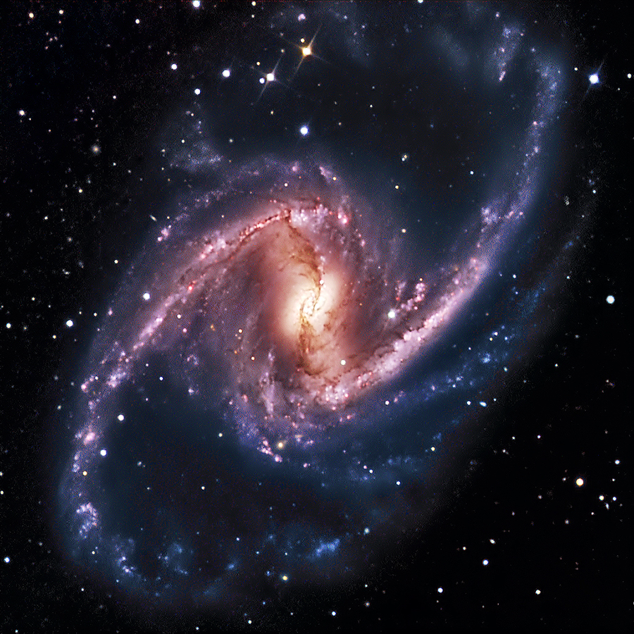
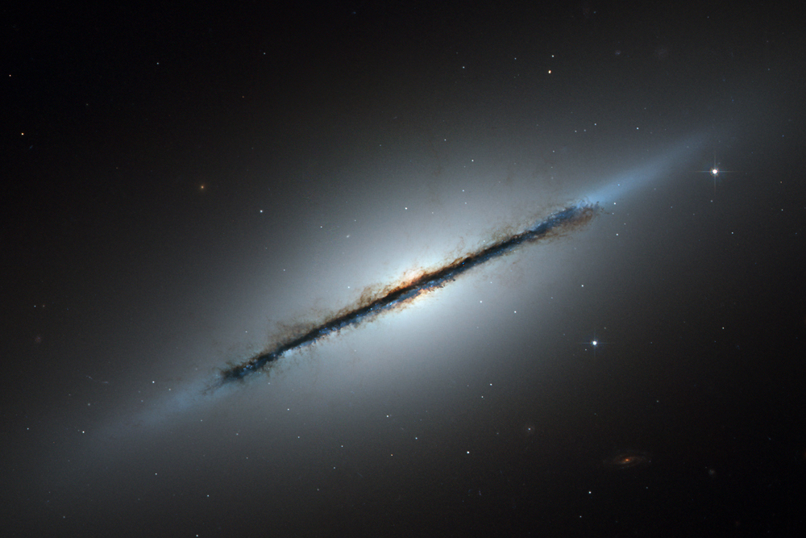
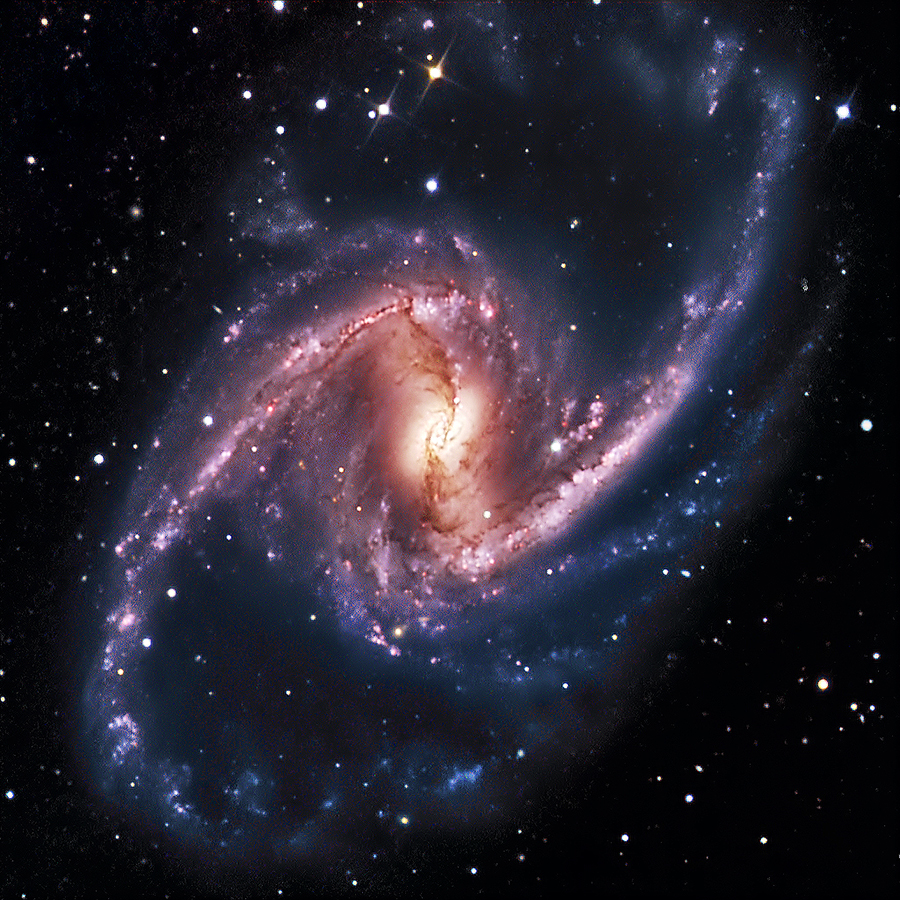
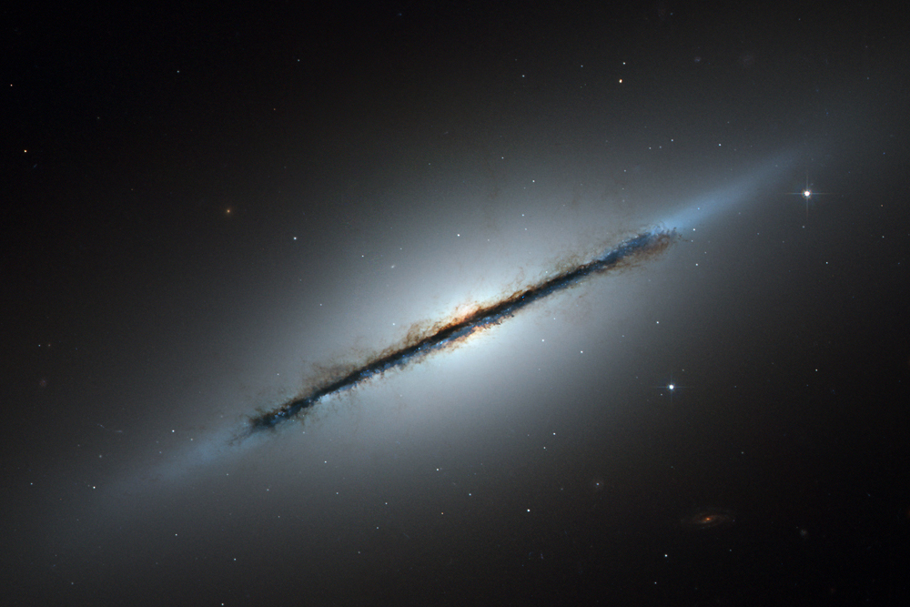

Galakser
En galakse er et system av stjerner, gass, støv og mørk materie som holdes samlet av tyngdekrefter. Galakser varierer i størrelse fra et par tusen til flere hundre tusen lysår i diameter. De kan inneholde fra noen få millioner til flere billioner stjerner. Observasjoner tyder på at det finnes et supermassivt sort hull i sentrum av de fleste, om ikke alle, galakser.
Typer galakser
- Elliptiske galakser
- Spiralgalakser
- Linseformede galakser
- Irregulære galakser

 


